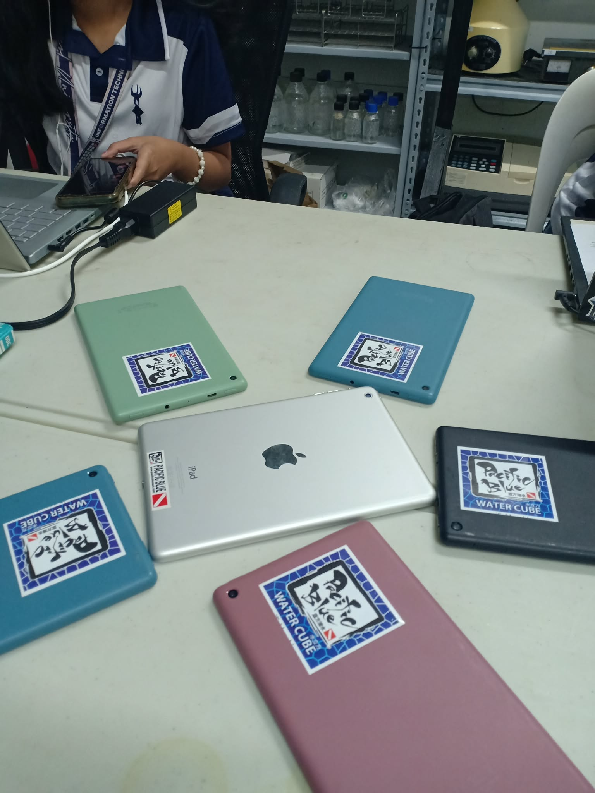
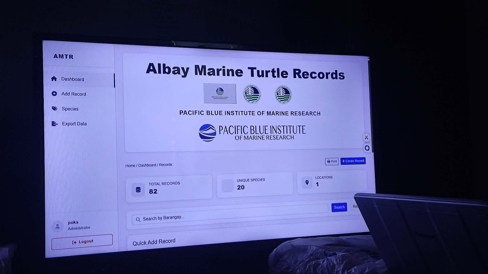

Throughout this week, I focused on improving various functionalities and interface components of the POS system to enhance usability, responsiveness, and overall workflow efficiency. Several issues related to the admin and cashier modules were resolved, while interface layouts were refined to create a cleaner and more organized user experience across different devices. I also participated in Quality Assurance testing for the Albay Marine Turtle Records system, where I reviewed system functionalities, identified issues, and helped ensure that the system operated properly and efficiently.
I also contributed to improving the kitchen workflow features of the POS system by developing a more organized and structured kitchen order interface. Enhancements were made to improve order categorization, menu navigation, and customization options for food preparation. These improvements helped make the ordering process more efficient and easier for kitchen staff to manage during operations.
In addition, I worked on refining the menu management and filtering system to provide a more organized browsing experience for users. The interface design was improved through better visual organization, category structuring, and consistent navigation behavior. I also contributed to enhancing receipt layouts, search functionality, validation handling, and overall system responsiveness. Furthermore, I assisted in expanding and organizing menu data to ensure accurate product information and smoother system interaction.
Through these tasks, I improved my skills in frontend development, UI/UX enhancement, system organization, quality assurance testing, and workflow optimization within a real-world development environment.

